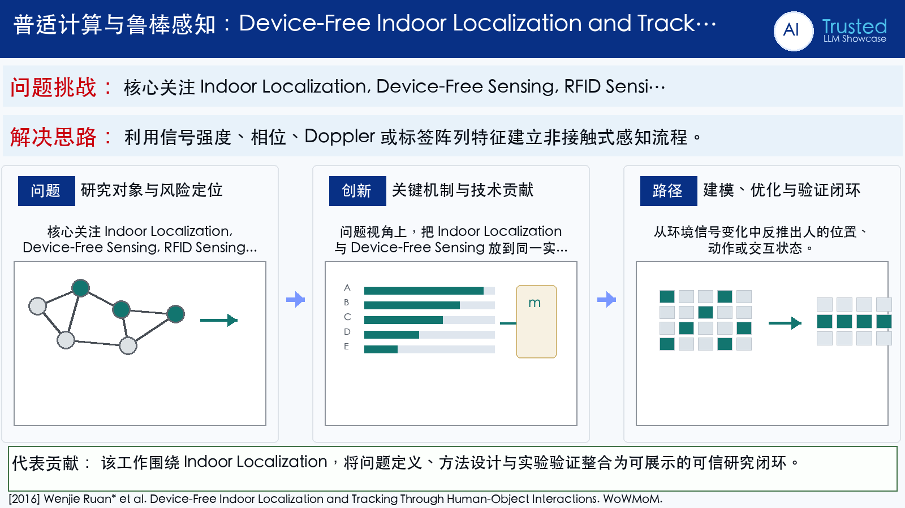

Problem
解决的问题
这篇论文属于“普适计算与鲁棒感知”方向，核心关注 Indoor Localization, Device-Free Sensing, RFID Sensing, Robust Sensing。它要解决的不是单纯提升一个指标，而是在 WoWMoM 场景下，让模型、数据或感知系统面对真实扰动和任务约束时仍然可用、可评估、可解释。把弱无线信号转化为可学习的行为、位置或姿态表征。避免用户佩戴额外设备，降低真实场景部署门槛。解决室内定位中遮挡、反射和多径干扰造成的不稳定问题。
Pervasive Computing and Robust Sensing · 2016 · WoWMoM
Device-Free Indoor Localization and Tracking Through Human-Object Interactions
Problem
这篇论文属于“普适计算与鲁棒感知”方向，核心关注 Indoor Localization, Device-Free Sensing, RFID Sensing, Robust Sensing。它要解决的不是单纯提升一个指标，而是在 WoWMoM 场景下，让模型、数据或感知系统面对真实扰动和任务约束时仍然可用、可评估、可解释。把弱无线信号转化为可学习的行为、位置或姿态表征。避免用户佩戴额外设备，降低真实场景部署门槛。解决室内定位中遮挡、反射和多径干扰造成的不稳定问题。
Value
用于展示时，这篇论文可以放在“问题定义 - 方法设计 - 证据评估”的链条中理解。它的价值在于把 Indoor Localization 具体化为一个可实验验证的研究问题，并通过 IEEE International Symposium on a World of Wireless, Mobile and Multimedia Networks (WoWMoM)（CCF C, CORE B） 的发表形态呈现该方向的代表性进展。
ImageGen-style Representative Page
该代表页参考学术汇报信息图风格生成，用统一的深蓝标题栏、问题/思路提示带和三段式方法卡片，总结论文的主要研究问题、创新点与解决思路。
打开原文 PDF
Technical Route
Innovation